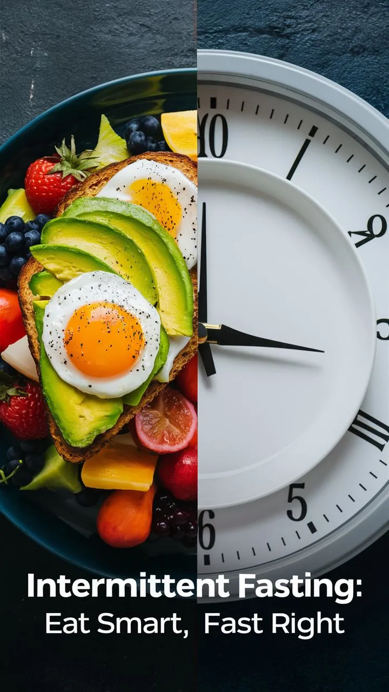

Everything About Intermittent Fasting + Free Calculator & What Breaks Your Fast
Intermittent fasting has taken the health world by storm — and for good reason. Whether you're looking to lose weight, improve energy levels, or simply take control of your eating habits, this time-based eating pattern has helped millions. But with so many methods, myths, and questions (like “can you chew sugar-free gum while intermittent fasting?”), it can be overwhelming to start. That’s why we created this complete guide — and included a free intermittent fasting calculator to personalize your plan instantly.
What Is Intermittent Fasting?
Intermittent fasting (IF) is more than a weight loss trend; it's a lifestyle rooted in ancestral health and modern science. At its core, IF is about cycling between periods of eating and fasting. Unlike traditional diets, it doesn't tell you what foods to eat, but when to eat them. This simplicity has made it a favorite among those looking for structure without restriction.
The practice dates back centuries, often used for spiritual, mental, and physical clarity. Today, science supports its benefits, linking intermittent fasting to improved metabolism, insulin sensitivity, and even cellular repair through autophagy.
Popular Intermittent Fasting Methods
There are several approaches to intermittent fasting, each with varying intensity:
- 16:8: Fast for 16 hours and eat during an 8-hour window (e.g., 12 PM–8 PM)
- 18:6: Fast for 18 hours, eat for 6 hours. Often used by advanced fasters
- 5:2: Eat normally for 5 days, then reduce calories to 500–600 for 2 non-consecutive days
- OMAD (One Meal A Day): A 23:1 fasting-to-eating ratio, ideal for disciplined users
- Alternate-Day Fasting: Fast every other day with or without calorie restriction
Choosing the best fasting window for weight loss depends on your lifestyle, goals, and how your body responds to extended periods without food.
Free Intermittent Fasting Calculator
To make things easier, we created a free intermittent fasting calculator that helps you find the perfect eating and fasting windows based on your daily routine and goals. Whether you're just starting or switching methods, this tool gives you a personalized fasting plan in seconds.
Intermittent Fasting Calculator
Benefits of Intermittent Fasting
IF goes beyond calorie control. Here are some science-backed benefits:
- Promotes fat burning by reducing insulin levels
- Supports autophagy, a process that cleans out damaged cells
- Improves heart health by regulating blood pressure and cholesterol
- May enhance brain health and reduce the risk of neurodegenerative diseases
- Can improve hormonal balance and support longevity
Can You Chew Sugar-Free Gum While Intermittent Fasting?
A frequently asked question is: can you chew sugar-free gum while intermittent fasting? The short answer is: usually yes. Sugar-free gum generally contains fewer than 5 calories per piece and does not significantly impact insulin levels, which means it won’t break your fast in most cases.
However, it depends on your goal. If you're fasting for weight loss, it’s typically fine. But if you're fasting strictly for autophagy or gut rest, even artificial sweeteners might slightly interfere. Opt for natural, xylitol-based gums when possible.
Tips for Successful Intermittent Fasting
- Start slow — don’t jump into 18:6 or OMAD if you’re a beginner
- Hydrate often with water, black coffee, or herbal tea
- Focus on whole, nutrient-dense meals during eating windows
- Get enough sleep — it helps regulate hunger hormones
- Be consistent — the key to success with IF is long-term commitment
Sample Fasting Schedule (16:8)
Here's a common and beginner-friendly IF schedule using the 16:8 method:
- 8:00 PM: Finish your last meal and begin fasting
- 8:00 AM: Continue fasting — you can have water, black coffee, or tea
- 12:00 PM: Break your fast with a high-protein meal
- 7:30 PM: Eat your final meal of the day, finishing before 8:00 PM
You can adjust this schedule based on your sleep, work, or training routine. The key is staying consistent with your chosen window.
Conclusion
Intermittent fasting is more than just a trend — it’s a sustainable and science-backed lifestyle that offers numerous benefits from fat loss to mental clarity. With various fasting methods available, you can find a schedule that fits your goals and routine. Our free intermittent fasting calculator helps take the guesswork out of planning, so you can focus on results.
Whether you're aiming for weight loss, improved energy, or simply better eating habits, intermittent fasting provides a flexible framework for success. Just remember to listen to your body, stay hydrated, and commit to consistency. The journey might start with a clock — but it leads to transformation.
Common Mistakes to Avoid
- Skipping water during fasting: Dehydration can lead to fatigue, headaches, and dizziness. Always drink plenty of water.
- Overeating during eating windows: Just because you're fasting doesn't mean you can binge. Stick to nutrient-dense meals.
- Breaking your fast with junk food: This can cause blood sugar spikes. Break your fast with protein, fiber, and healthy fats.
- Choosing a method that doesn’t fit your lifestyle: If a method feels too hard to maintain, switch to one that’s more sustainable.
- Being too rigid: Flexibility is important. Life happens — adjust your window as needed without guilt.
Frequently Asked Questions
Yes, black coffee is allowed during intermittent fasting. It has virtually no calories and may even support fat burning and appetite suppression. Avoid adding sugar or cream, as they can break your fast.
In most cases, yes. Sugar-free gum usually contains very few calories and does not significantly impact insulin levels. However, for strict fasting goals like autophagy, even small ingredients may affect results.
The 16:8 method is often recommended for beginners. It provides a manageable fasting period while allowing flexibility in food choices and timing.
No, short-term intermittent fasting generally does not slow metabolism. In fact, it may increase it slightly due to a rise in norepinephrine levels. Long-term extreme restriction, however, could have adverse effects.
Yes, many people train effectively while fasting. Fasted workouts may even boost fat loss. Just be sure to stay hydrated and monitor how your body responds.
Generally yes, but some women may need to adjust their fasting window or method due to hormonal fluctuations. It’s best to start gently and consult a healthcare provider if unsure.
Anything with calories technically breaks a fast. Water, black coffee, and unsweetened tea are safe. Avoid creamers, juices, or anything that causes an insulin response.